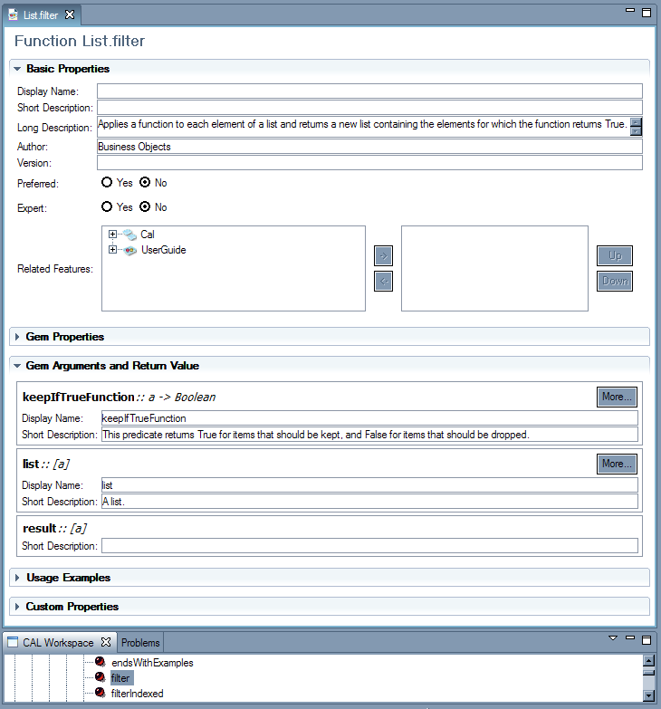

|  |
Metadata is used by the Gem Cutter to enhance the display of gems on the Table Top. It is also used by some programs to annotate CAL entities in a manner specific to the program. For example, the BAM sample included in the Open Quark distribution uses metadata to tag trigger, metric and action gems.
The CAL Eclipse Plug-in includes a metadata editor that can be used to view or edit metadata. You can open the editor from the context menu in the CAL Workspace view or in the Outline view when a CAL file is being edited.
The editor is very similar to the Properties Browser in the Gem Cutter. The Gem Cutter Manual has a detailed description of the browser.